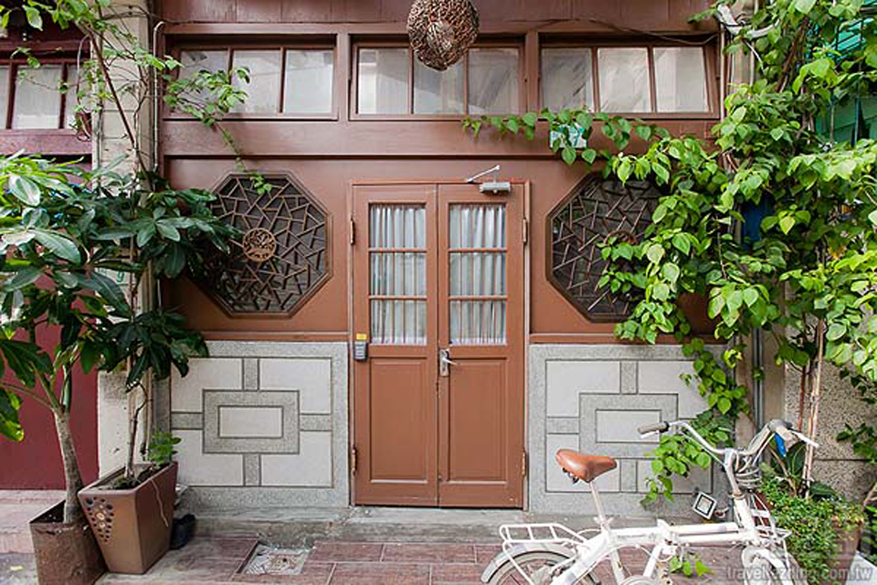
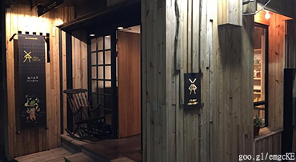
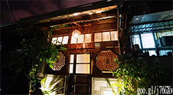
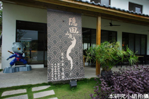
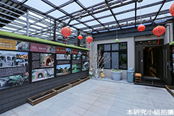
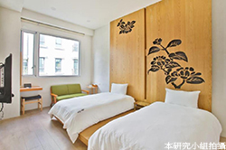
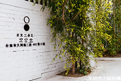

精選住宿
|  |  |  |
| 西門淺草民宿 | 捉鳳凰民宿 | 隱田民宿 |
| 西門淺草位於台南，距離赤崁樓有12分鐘步行路程，提供覆蓋各處的免費WiFi以及免費自行車，供客人遊覽城市。西門淺草距離台南孔廟有5分鐘車程，距離台南花園夜市有10分鐘車程，距離台南火車站有不到10分鐘的車程。每間客房均配有空調、平板電視、水壺以及帶免費洗浴用品和吹風機的私人浴室，旅館還設有共用休息室，旅遊諮詢台的工作人員將熱心地幫助客人安排旅程。客人還可寄存行李，此區為台南的人氣推薦區域（依據真實住客評語）此住宿也被評選為台南最佳地理位置住宿之一！顧客滿意度比同區域其他住宿高，此住宿被評為台南性價比最高的選擇！相較城市其他相似住宿，此間住宿更物超所值！ 資料來源:goo.gl/RME2Or |
對於『捉鳳凰』這個名稱是因為『府城鳳凰風水八卦一說』。台南也稱為『鳳凰城』，古代人為了把鳳凰留在府城內，以確保這地方繁榮不衰； 因此沿著普濟殿，把街道蓋成『八卦網』狀，用來捉住鳳凰。連大門口的窗戶也是以府城鳳凰風水八卦說的意象圖案。民宿主人將殘破不勘的近百年老屋大改造，再將台南的歷史文化帶入到房子內。大門一進去就是左右兩邊的客廳沙發區，可以讓你在這裡休息、發呆，和朋友聊聊，走道上的地板是用透明玻璃走道最底推開比人高很多的門就是『海安路屋』風格的房間。整個就是以簡單、乾淨為主。他是以『神農街屋』為構想，而且窗戶和門都是可以打開的喔！因為民居剛好位於五條港，所以才以『街屋』方式呈現，是充滿故事性的民宿喔！資料來源:goo.gl/ZVbGyl |
隱田山房坐落在玉井山中，沒有奢華裝飾，充滿著家的安全感，厚實的木質地板以及樑柱，在暈黃的燈光下，渲染出了溫暖與沉靜的氣氛，也多了一點閒散的慵懶，這是入住隱田山房最直接的感受，屬於家的歸屬感。不論平時多繁忙，只要來到這，就能享受這沒有繁忙的城市步調，也沒有喧囂的車水馬龍；只有滿山爭艷的花草相映、鳥鳴蛙叫的自然音符，這是大自然給予的天然獻禮；與三五好友在此慢慢享受悠閒時光，閒談中看看滿山翠綠山色，再輕啜一口最愛的咖啡，這就是屬於家的歸屬感吧。隱田山房的溫暖自然，靜靜迎接著旅客到此休憩，享受真正的自然呼吸，一起分享這大自然的天然美景。資料來源:goo.gl/wqVCLZ |
|  |  |  |
| 玩舍精品民宿 | 樹說設計民宿 | 8又二分之一民宿 |
| 「台南安平租屋．玩舍」鄰近安平老街、札哈木原住民公園、億載金城安平古堡、天后宮等景點 交通便利且生活機能良好五到十分鐘的車程就可以品嘗老街美食、探訪古城遺蹟，享受假日午後的悠閒時光「玩舍」屋向座北朝南 安靜居住 讓你疲累的身心 迅速恢復體力「玩舍」不惜成本花費3佰餘萬裝橫 採2-4人合租方式套房設計以海藍、鮮橙、草綠、葡萄紫等色系為主軸氣氛活潑溫馨、明亮整潔且提供LG42吋網路電視、個人冰箱、冷氣及乾濕分離衛浴讓房客輕鬆入住?慢活在台南古城就是這麼隨興自在！資料來源:Goo.gl/O5MMmL |
這間很質感的《樹說》靠近海邊，從這裡可以悠閒地騎著鐵馬賞夕陽，它藏在安平的小巷弄裡，住在這裡的質感很好，但房價訂的不高。用餐的地方，提供電腦和列印機，民宿裡有增加採光的天井，成群的魚兒在水池裡優游...有設置電梯，有長輩同行或是行李多的話，方便不少。每個樓層都設有放置冰箱、飲水機等公共設施的空間。樹說的房間，其中雙人房比較多，走的是極簡雅致的日式風格，光線從窗外灑進來的，非常有質感。乾溼分離的盥洗空間，使用的地板是非常防滑的材質，除了免治馬桶之外，其他該有的淋浴設備、盥洗備品都很齊全。整體都是給人極淨到底，且寬敞無壓力的氛圍。資料來源:goo.gl/OR7QgO |
民宿位在非熱鬧的台南南區，是將荒廢的傳統老宅與舊美軍宿舍，以新一代的思維拆解再重新組合，將人文、藝術及美食注入空間中，賦予建築全新的生命力。一間由白黑紅3元素所組合的平房小屋，沒有高大的圍牆，僅有寫意的桂竹綠籬，這裡的美食會讓你驚喜；藝文展演會讓你感動；而與藝術結合的旅店空間亦讓人舒心。旅居空間，以雙人房為準則、旅行為概念、主題為構想，結合花藝、攝影、插畫、音樂、設計、建築與電影，讓空間即為藝術，藝術來演繹空間。城市邊緣的風景不再平凡，旅行的意義也可以改變一下，讓身體與心靈來到台南的巷弄間，與無限美麗的人文生活邂逅吧！ 資料來源:goo.gl/wYPyut |